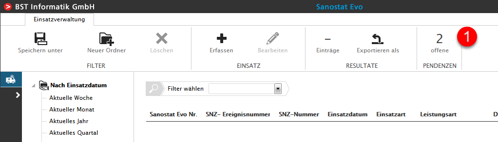
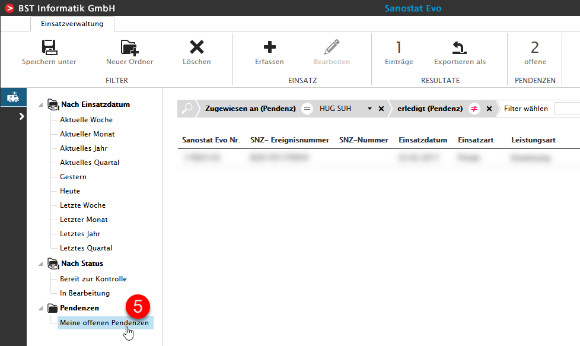

Meine offenen Pendenzen
Wir erklären Ihnen Schritt für Schritt die Erstellung eines Filters für Ihre offenen Pendenzen
Anzeige 'offene Pendenzen' beim Login des Benutzers (1)

Filter wählen, 'Zugewiesen an (Pendenz)' (2)
Namen auswählen für die zugewiesenen Pendenzen (3)
Mithilfe des Auswahlfeldes wählen Sie den Filter 'Zugewiesen an (Pendenz)'. In der Auswahl ComboBox wählen Sie Ihren Namen aus und alle an Sie zugewiesenen Pendenzen erscheinen in der Übersicht.
Filter wählen, 'erledigt (Pendenz)' (4)
Anschliessend können Sie den Filter verfeinern, dazu wählen Sie aus dem Auswahlfeld das gewünschte Kriterium.
Filter wählen, offene Pendenzen (5)
Um die Auswahl Ihrer offenen Pendenzen zu erhalten, klicken Sie auf das '=' Zeichen nach 'erledigt (Pendenz)' und verneinen somit das Kriterium.
Ihre offenen Pendenzen werden nun in der Übersicht aufgelistet (6)
Neuen Ordner 'Pendenzen' erstellen, um den Filter zu speichern (1)
Der Ordner 'Pendenzen' wurde nun gespeichert (2) - Wählen Sie aus dem Auswahlfeld diesen Ordner (3)
Filter benennen und speichern (4)
Ihr Filter wurde nun gespeichert (5)
Nach dem Sie diesen neuen Filter gespeichert haben, können Sie ihn immer wieder aufrufen und sehen Ihre offenen Pendenzen auf einen Blick.

Gespeicherte Filter sind nur für Sie sichtbar. Jeder Benutzer hat seine eigenen Filter.